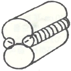
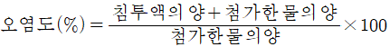
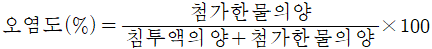
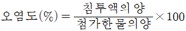
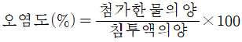
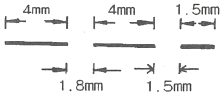

침투비파괴검사기사 (2014-09-20 기출문제)
1과목: 비파괴검사 개론
1. 다음 중 30mm 압연 강판에 존재하는 라미네이션을 검사하고자 할 때 가장 적절한 비파괴검사법은?
- 자동 방사선투과검사
- 자동 와전류탐상검사
- 자동 초음파탐상검사
- 질량분석 누설검사
(정답률: 64%)

2. 다음 중 비파괴검사법에 대한 일반적인 설명으로 틀린 것은?
- 초음파탐상시험은 방사선투과시험보다 두꺼운 강재를 검사할 수 있다.
- 방사선투과시험은 결함의 깊이와 형태를 정확히 알 수 있다.
- 초음파탐상시험은 원리적으로 펄스반사법이 많이 이용되고 있다.
- 표면결함의 검출은 강자성체의 경우 자분탐상시험이 효과적이다.
(정답률: 66%)
3. 와전류탐상시험이 가능하지 않은 대상물은?
- 고무 막대
- 강철 막대
- 구리 막대
- 알루미늄 막대
(정답률: 96%)
4. 자분탐상검사에 영향을 미치는 자분의 성질로 가장 거리가 먼 것은?
- 지분의 색조와 휘도
- 자분의 전기적 성질
- 자분의 입도
- 자분의 비중
(정답률: 45%)
5. 다음 중 침투탐상시험이 작합한지를 선택하는 조건과 거리가 먼 것은?
- 시험체의 재질
- 시험체의 형상
- 시험체의 표면 상태
- 시험체의 제작 공차
(정답률: 89%)
6. 판재를 펀치와 다이 사이에서 압축하여 성형하는 방법은?
- 압출 가공
- 프레스 가공
- 인발 가공
- 압연 가공
(정답률: 69%)
7. 담금질(quenching)후의 마텐자이트의 결정구조는?
- 체심정방격자
- 면심정방격자
- 면심입방격자
- 조밀육방격자
(정답률: 49%)
8. 오스테나이트 스테인리스강의 입계부식에 관한 설명으로 틀린 것은?
- 결정입계에 탄화물 석출에 의해 부식이 발생된다.
- 결정입계에 질화물 석출에 의해 부식이 발생된다.
- 티타늄을 첨가하면 입계에 부식이 발생된다.
- 결정입계에 크롬 농도가 감소되어 부식이 발생한다.
(정답률: 62%)
9. 순철의 변태가 아닌 것은?
- A4 변태
- A3 변태
- A2 변태
- A1 변태
(정답률: 65%)
10. 주석청동 주물은 상당한 강도가 있고, 마모ㆍ수압 및 부식에 견디며, 외관도 미려하므로 널리 사용되나 용탕의 유동성을 좋게 하기 위하여 첨가하는 것은?
- s
- Ni
- Zn
- Pb
(정답률: 63%)
11. 강의 시험에서 죠미니 선단 담금질(Jominy end quenching test)시험의 목적은?
- 경화능시험
- 초단파시험
- 자기이력시험
- 전자유도시험
(정답률: 82%)
12. 6:4 황동에 Sn을 넣은 것으로 복수기판, 용접봉 등에 이용되는 것은?
- Naval brass
- Hard brass
- Albrac bronze
- Admiralty metal
(정답률: 71%)
13. 강중에 비금속 개재물의 영향을 설명한 것으로 틀린 것은?
- 재료 내부에 점재하여 인성을 해친다.
- 강에 백점이나 헤어 크랙의 원인이 된다.
- 철의 규산염 등은 적열취성의 원인이 된다.
- 열처리 하였을 때 개재물로부터 균열을 일으키기 쉽다.
(정답률: 43%)
14. 금속재료에서 탄소의 함량이 가장 적은 것에서 많은 순서로 옳은 것은?
- 전해철＜연강＜주철＜경강
- 전해철＜연강＜경강＜주철
- 연강＜전해철＜경강＜주철
- 연강＜전해철＜주철＜경강
(정답률: 82%)
15. 금속 분말의 유동성에 영향을 미치는 인자가 아닌 것은?
- 분말의 수분 함량
- 분말의 입도 및 형상
- 분말의 자기적 성질
- 분말과 용기 사이의 마찰 계수
(정답률: 57%)
16. 알루미늄, 마그네슘, 구리 및 구리합금, 스테인리스강의 절단에 주로 이용되는 절단법은?
- 산소 아크 절단
- 탄소 아크 절단
- 아크 에어 가우징
- 티그 절단
(정답률: 50%)
17. 이일반적인 서브머지드 아크용접에 대한 설명으로 옳은 것은?
- 용입 깊이가 얕다.
- 사용 용접전류가 적어 용접능률이 낮다.
- 아크가 눈에 보이므로 용접상태를 확인하면서 용접할 수 있다.
- 용접선이 길고, 연속용접이 가능한 부재에 적용하는 것이 적합하다.
(정답률: 62%)
18. 용접결함 중 치수상의 결함이 아닌 것은?
- 스트레인 변형
- 용접부 크기의 부적당
- 접합 불량
- 용접부 형상의 부적당
(정답률: 60%)
19. 이산화탄소 아크용접 와이어에 구리 도금을 한 이유에 해당되지 않는 것은?
- 와이어의 녹을 방지한다.
- 전류의 가속(Pick-up)을 개선한다.
- 비드 외관을 개선하기 위함이다.
- 자연수명을 증가시키기(넓히기) 위함이다.
(정답률: 71%)
20. 다음 그림과 같은 플레어 용접의 흠 종류는?

- V형
- X형
- K형
- J형
(정답률: 80%)
2과목: 침투탐상검사 원리
21. 용접부에 나타나는 불연속 중 침투탐상시험으로 가장 쉽게 검출할 수 있는 것은?
- 크레이터균열
- 비드밑균열
- 슬래그혼입
- 융합불량
(정답률: 78%)
22. 수세성 침투탐상검사의 특징을 설명한 것 중 틀린 것은?
- 표면이 비교적 거친 부품의 검사에 적합하다.
- 과잉 침투제의 제거가 용이하다.
- 얕고 넓은 결함 검출이 양호하다.
- 수분에 오염될 경우 침투액의 성능이 저하된다.
(정답률: 69%)
23. 침투탐상시험용 현상제가 갖추어야 할 일반적인 특성이 아닌 것은?
- 침투액을 분산시키는 능력이 좋아야 한다.
- 형광 침투액을 사용할 경우 자외선에 의해 형광을 잘 발산해야 한다.
- 습식 현상제의 경우 현탁성이 좋아야 한다.
- 시험표면에 대한 부착성이 좋고 현상막의 제거가 쉬워야 한다.
(정답률: 54%)
24. 유화제 종류에서 물베이수스 유화제는 무슨 작용으로 유화가 진행되는가?
- 환원작용
- 흡착작용
- 산화작용
- 삼투압작용
(정답률: 48%)
25. 침투탕상시험 대상물 중 건식 현상제보다 습식현상제가 유리한 것은?
- 가공이 잘된 표면
- 표면이 거친 주물품
- 가공품이 있는 제품
- 루트 균열
(정답률: 65%)
26. 형광 침투탐상검사에 사용되는 자외선조사등 전구에는 항상 필터가 사용되는데 그 이유를 설명한 것 중 잘못된 것은?
- 필터가 없으면 백색광이 너무 많이 나오기 때문에
- 필터가 없으면 사람의 눈에 해롭기 때문에
- 필터는 불필요한 파장의 광선을 제거해 주기 때문에
- 필터를 사용함으로써 자외선의 강도가 증가되기 때문에
(정답률: 73%)
27. 형광 침투탐상제는 측정 파장의 자외선에 민감하게 반응하는데 그 파장은?
- 550nm
- 450nm
- 350nm
- 250nm
(정답률: 71%)
28. 다른 침투탐상시험과 비교한 후유화성 형광침투탐상시험의 장점으로 옳은 것은?
- 모래 주조물(sand casting)과 같은 거친 표면을 검사하는데 좋다.
- 다른 침투탐상시험 방법보다 공정이 비교적 간단하다.
- 전기분해로 얇은 보호막을 입힌 표면에 적용할 수 있다.
- 넓고 얕은 결함을 탐지하는데 적합하다.
(정답률: 73%)
29. 특수한 검사목적에 사용되는 역형광법(Reversed fluorescence method)에 대한 설명 중 잘못된 것은?
- 염색침투제를 사용하여 검사한다.
- 유화제에 형광성분이 포함되어 있다.
- 형광성분이 있는 현상제를 적용한다.
- 불연속부는 어두운 선이나 점으로 나타난다.
(정답률: 40%)
30. 다음 중 침투탐상시험에서 허용되지 않는 경우는?
- 유화제의 침적적용
- 현상제의 분사적용
- 침투액의 수세제거
- 유화제의 솔질적용
(정답률: 85%)
31. 후유화성 침투탐상시험에서 유화시간은 일반적으로 어떻게 결정하는가?
- 제조회사의 권고에 따른다.
- 침투시간과 동일하게 한다.
- 현상시간의 반으로 한다.
- 실험적으로 구하여 결정한다.
(정답률: 52%)
32. 티타늄(Ti)으로 된 재질에 사용해서는 안 되는 전처리 방법은?
- 증기세척
- 초음파세척
- 알카리세척
- 물세척
(정답률: 31%)
33. 침투탐상검사에서 사용하는 이상적인 침투액의 조건으로 틀린 것은?
- 침투액은 인화점과 휘발성이 낮아야 한다.
- 미세 개구부로부터의 흡출이 빨라야 한다.
- 침투액은 증발이나 건조가 빠르지 않아야 한다.
- 침투액은 시험 면을 균일하고 충분하게 적셔야 한다.
(정답률: 76%)
34. 침투탐상작업이 완료된 후 특정 조작의 잘못이 발견되어 결과의 신뢰성이 의심스러울 경우 가장 적절한 조치는?
- 잘못된 조작을 찾아낸다.
- 검사원을 교체하여 검사한다.
- 검사절차 인정을 다시 실시한다.
- 원래 검사 절차에 따라 재검사를 실시한다.
(정답률: 72%)
35. 대비시험편 중 고감도 후유화성 형광 침투액의 성능비교 평가에 사용되는 것은?
- A형 대비시험편
- 침투탐상 시스템 모니터 패널
- B형 대비시험편
- 복합균열 시험편
(정답률: 53%)
36. 침투액이 결함 속으로 침투하는 것을 방해하고 의사모양을 나타내는 원인이 아닌 것은?
- 시험체 표면의 기계유, 경유, 윤활유 등
- 시험체 표면의 산 또는 알칼리성 화학물질
- 시험체 표면의 페인트, 코팅 등 표면의 피막류
- 시험체 표면의 전처리에 사용된 휘발성의 용제 제거제
(정답률: 76%)
37. 액체 침투탐상시험에서 탐상제의 성능 점검 및 조작방법의 적합여부를 알아보기 위해 사용하는 대비시험편의 사용목적으로 옳지 않은 것은?
- 조작방법이나 조작조건의 적합여부
- 탐상제 제작 시 제품의 품질관리
- 검사원의 교육 및 훈련
- 다른 탐상조건에서 탐상제의 품질과 성능의 비교시험 및 유지관리
(정답률: 53%)
38. 유화시간이 부족하거나 과도한 경우에 대한 설명으로 틀린 것은?
- 유화시간이 부족한 경우, 침투액의 일부가 유화되지 않고 잔류한다.
- 유화시간이 부족한 경우, 잔류된 침투액이 세척후에도 남아 의사지시모양을 발생시킨다.
- 유화시간이 과도한 경우, 결함내의 침투액까지 유화제가 작용하게 된다.
- 유화시간이 과도한 경우, 세척할 때 결함내의 침투액까지 세척되는 과세척을 일으키나 결함검출에는 이상이 없다.
(정답률: 77%)
39. 침투탐상시험에 사용되는 검사 재료 중, 낮은 증기압 특성이 가장 필요한 재료는?
- 침투제
- 유화제
- 현상제
- 세척제
(정답률: 36%)
40. 세라믹, 도자기 등의 다공성 재료에는 필터작용을 이용한 침투탐상시험(filtered particle penetranf trsting)이 이용되는데, 이 때 적용하는 현상제는?
- 건식 현상제를 사용한다.
- 수용성 현상제를 사용한다.
- 용제 현상제를 사용한다.
- 현상제가 요구되지 않는다.
(정답률: 44%)
3과목: 침투탐상검사 시험
41. 휴우화성 형광 침투탐상시험 시 세척단계에서 가장 적절한 방법은?
- 침투액이 완전히 유화되기 전에 세척한다.
- 침투액이 완전히 유화된 후에 세척한다.
- 잉여 침투액이 제거된 후 세척작업을 중단한다.
- 110°F 이상의 고온으로 세척한다.
(정답률: 69%)
42. 열간 압연한 강판(10×10cm 또는 4×4인치)을 45° 정도 기울인 후 습식현상제 25mL 정도를 시험편에 부어 5분 정도 배액시킨 후 107℃(또는 225°F) 정도에서 건조시킨 시험편을 대비표준과 비교하는 습식현상제의 성능시험은?
- 퍼짐성 시험
- 부식 시험
- 표면 균일성 시험
- 제거성 시험
(정답률: 56%)
43. 유화제가 갖추어야 할 조건이 아닌 것은?
- 결함에 대한 침투성이 낮아야 한다.
- 후유화성 침투액과 잘 용해되어야 한다.
- 침투액의 혼입에 의한 성능저하가 적어야 한다.
- 시험체의 표면에서 침투액과 동일한 색채를 가져야 한다.
(정답률: 74%)
44. 탐상결과의 기록방법으로 적당하지 않는 방법은?
- 사진에 의한 방법
- 전사에 의한 방법
- 도면으로 표시하는 방법
- 시험편에 표시해두는 방법
(정답률: 71%)
45. 알루미늄, 마그네슘, 스테인리스 강 용접품의 결함종류가 아닌 것은?
- 균열(Crack)
- 기공(Porosity)
- 겹침(Laps)
- 융합불량(Lack of bond)
(정답률: 62%)
46. 수세성 침투액에 대한 물의 오염을 측정하는 계산식으로 옳은 것은?




(정답률: 64%)
47. 일반적으로 요구되는 침투액의 온도와 시험체의 표면온도(℃)의 범위로 옳은 것은?
- 5~15
- 15~50
- 50~75
- 75~100
(정답률: 87%)
48. 침투탐상시험법으로 유리의 미세균열을 탐상하고자 할 때 가장 효과적인 방법은?
- 후유화성 염색침투탐상시험법
- 후유화성 형광침투탐상시험법
- 하전입자(Electrified Particle)법
- 입자여과(Filtered Particle)법
(정답률: 47%)
49. 사용 중인 수세성 침투액의 기능이 저하될 수 있는 가장 큰 원인은 무엇인가?
- 일부성분의 증발
- 물에 의한 오염
- 자연발화
- 검사품과의 화학반응
(정답률: 81%)
50. 현상처리 후 나타나는 결함 지시모양의 색상에 영향을 미치는 것은?
- 침투액
- 유화제
- 세척제
- 현상제
(정답률: 52%)
51. 주조결함 중에서 수축균열이 가장 많이 발생하는 곳을 주로 어디인가?
- 두께변화가 심한 곳
- 두꺼운 쪽
- 얇은쪽
- 용융물이 들어가는 쪽
(정답률: 73%)
52. 침투탐상검사 시 침투시간 단축에 가장 효과적인 방법은?
- 시험체 표면에 적용하는 침투액의 양을 많게 한다.
- 침투액을 잘 교반하여 적용한다.
- 시험체의 온도를 높인다.
- 표면에 적용할 침투액의 온도를 높인다.
(정답률: 58%)
53. 형광침투탐상검사의 관찰방법에 대한 설명 중 틀린 것은?
- 자외선을 직접 눈에 조사시켜서는 안된다.
- 자외선을 차단할 수 있는 안경을 착용하면 좋다.
- 관찰을 시작하기 전 눈을 어둠에 적응시켜야 한다.
- 형광휘도를 높이기 위해 검사체 외의 반사면을 많이 갖추어야 한다.
(정답률: 85%)
54. 후유화성 침투액을 사용하는 탐상시험에서 유화제에 필요한 성능으로 틀린 것은?
- 침투성이 높아야 한다.
- 침투액과 서로 잘 녹아야 한다.
- 유화 및 세척성이 좋아야 한다.
- 침투액의 혼입에 의한 성능저하가 적어야 한다.
(정답률: 56%)
55. 서로 다른 두 종류의 침투제에 대한 균열 검출능력을 비교하기 위한 방법으로 가장 일반적인 방법은?
- 접촉각을 측정하여 비교한다.
- 비중계를 사용하여 비중을 측정하여 비교한다.
- 점도계를 사용하여 비중을 측정하여 비교한다.
- 균열이 있는 침투탐상용 대비시험편으로 시험하여 비교한다.
(정답률: 65%)
56. 형광침투탐상시험 시 자외선 등 아래에서 건식 현상제를 시험면에 도포했을 때 관찰되는 색은?
- 연노랑ㆍ진노랑색
- 분홍ㆍ빨강색
- 연초록ㆍ진녹색
- 연파랑ㆍ보라색
(정답률: 54%)
57. 기름 베이스 유화제를 사용하는 후유화성 형광 침투액과 습식 현상제를 사용하여 침투탐상시험을 하려고 한다. 다음 중 알맞은 시험절차는?
- 전처리→침투처리→유화처리→세척처리→건조처리→현상처리→관찰→후처리
- 전처리→침투처리→유화처리→세척처리→현상처리→건조처리→관찰→후처리
- 전처리→유화처리→건조처리→침투처리→세척처리→현상처리→관찰→후처리
- 전처리→침투처리→세척처리→건조처리→현상처리→유화처리→관찰→후처리
(정답률: 64%)
58. 침투탐상검사용 모니터 패널에 대한 내용이 아닌 것은?
- 재질은 스테인리스이고, 판의 반쪽은 크롬도금이 되어있다.
- 크롬도금이 된 부분의 중십부에는 4개의 결함이 큰 것부터 작은 순서로 배열되어 있다.
- 크롬도금 면은 검출능력을 조사한다.
- 균열이 없는 반 쪽은 세정성을 시험하는데 사용된다.
(정답률: 58%)
59. 프레스 핏(press-fit)의 침투탐상검사 시 지시는?
- 불연속 지시
- 결함 지시
- 무관련 지시
- 관련 지시
(정답률: 42%)
60. 다음 검사방법 중 수분이 혼입되면 침투액의 성능이 저하되고, 얕은 표면결함을 검출하는데 신뢰성이 떨어지나, 다량의 소형부품을 검사하기 적합한 검사방법은?
- 수세성 형광 침투탐상검사
- 용제제거성 염색 침투탐상검사
- 후유화성 형광 침투탐상검사
- 용제제거성 형광 침투탐상검사
(정답률: 65%)
4과목: 침투탐상검사 규격
61. 침투탐상 시험방법 및 침투지시모양의 분류(KS B 0816)에서 두 개의 선상 침투지시모양이 거의 동일 선상에 나란히 있을 때 연속 침투지시모양으로 분류하는 지시사이의 거리는 얼마인가?
- 5mm 이하인 때
- 4mm 이하인 때
- 2mm 이하인 때
- 긴 쪽 침투지시모양 길이보다도 간격이 길 때
(정답률: 85%)
62. 보일러 및 압력용기에 대한 침투탐상검사(ASME Sec,V Art.6)에 따른 침투탐상시험의 탐상제 오염물질 관리에 관한 사항으로 옳은 것은?
- 비철합금에 사용되는 모든 탐상제는 불순물 함유량에 대한 증명서를 확보해야 한다.
- 니켈합금을 시험할 경우 염소와 불소함유량 분석을 실시해야 한다.
- 오스테나이트강, 티타늄을 시험할 경우 황 함유량을 분석해야 한다.
- 니켈 합금, 오스테나이트강, 티타늄을 시험할 경우 황 함유량을 분석해야 한다.
(정답률: 46%)
63. 침투탐상 시험방법 및 침투지시모양의 분류(KS B 0816)에 의해 모든 검사를 수행하고 난 후 시험보고서를 작성하고자 한다. 시험체의 정보에 대하여 기록할 내용으로 가장 거리가 먼 것은?
- 시험체의 재질
- 시험체의 표면사항
- 시험체의 무게
- 시험체의 모양ㆍ치수
(정답률: 78%)
64. 보일러 및 압력용기에 대한 침투탐상검사(ASME Sec,V Art.6)에 규정한 침투탐상시험을 행하는 온도 범위는?
- 15℃~72℃
- 10℃~68℃
- 5℃~52℃
- 0℃~40℃
(정답률: 64%)
65. ASME Sec. Ⅷ Div. Ⅰ에서 선형결함과 비교할 때에 원형결함을 어떻게 규정하고 있는가?
- 결함길이와 폭이 같을 때만 원형결함으로 규정
- 결함길이가 폭의 4배 미만일 때에 원형결함으로 규정
- 결함길이가 폭의 3배 미만일 때에 원형결함으로 규정
- 결함길이가 폭의 2배 미만일 때에 원형결함으로 규정
(정답률: 71%)
66. 항공 우주용 기기의 침투탐상검사 방법(KS W 0914)에서 규정하는 침투액계의 타입, 방법, 감도의 연결이 틀린 것은?
- 타입 Ⅱ : 염색침투액계통
- 방법 A : 수세성 침투액계통을 사용하는 방법
- 감도레벨 1 : 초고감도
- 방법 B : 후유화성 침투액(친유성 유화제) 계통을 사용하는 방법
(정답률: 62%)
67. 항공 우주용 기기의 침투탐상 검사방법(KS W 0914)에서 수세성 침투액 제거 시 자동스프레이에 의한 세척 제원의 수온으로 적합하지 않은 것은?
- 7℃
- 17℃
- 27℃
- 37℃
(정답률: 69%)
68. 보일러 및 압력용기에 대한 침투탐상검사(ASME Sec,V Art.6)에 따라 탐상할 때 수세성이나 후유화성 과잉침투제를 제거한 후 공기순환 방법 등으로 건조시킬 때 시험체의 표면온도는 몇 도를 초과하지 않아야 하는가?
- 38℃
- 43℃
- 52℃
- 70℃
(정답률: 58%)
69. 보일러 및 압력용기에 대한 침투탐상검사(ASME Sec,V Art.6)에서 최종 판정은 현상시간이 시작된 후 얼마의 시간 범위안에서 실시하여야 하는가?
- 1~10분
- 1~30분
- 10~60분
- 30~60분
(정답률: 84%)
70. 보일러 및 압력용기에 대한 침투탐상검사(ASME Sec,V Art.6)에 따라 가시성 침투액을 사용한 지시를 관찰할 경우 시험면 표면의 최소 빛의 세기는?
- 350룩스
- 500룩스
- 800룩스
- 1000룩스
(정답률: 66%)
71. 보일러 및 압력용기에 대한 침투탐상검사(ASME Sec,V Art.6)에서 용접부위를 탐상할 때 전처리 과정에서 용접부위와 인접 경계면은 적어도 몇 cm 이내에 있는 오물, 그리스, 녹 등을 제거하도록 규정하고 있는가?
- 1.3cm
- 2.5cm
- 5.8cm
- 11.6cm
(정답률: 85%)
72. ASME Sec. Ⅷ Div. Ⅰ에서 4개 이상의 관련지시가 연속지시로 판정할 경우 상호간의 거리는 얼마 이하이어야 하는가?
- 3/4인치
- 1/4인치
- 1/8인치
- 1/16인치
(정답률: 66%)
73. 보일러 및 압력용기에 대한 침투탐상검사(ASME Sec,V Art.6)에 따라 침투탐상시험을 할 때, 염소와 불소의 합계 잔류함량이 무게비로 1%로 초과하는 경우, 시험에 적용할 수 있는 재질은?
- 티타늄
- 오스테나이트 스테인리스 강
- 듀플렉스 스테인리스 강
- 니켈 합금강
(정답률: 42%)
74. 침투탐상 시험방법 및 침투지시모양의 분류(KS B 0816)에서 세척액으로 세척처리 후에 실시하는 건조처리 방법으로 틀린 것은?
- 자연 건조한다.
- 마른 헝겊으로 닦아낸다.
- 종이 수건으로 닦아낸다.
- 가열 건조한다.
(정답률: 70%)
75. 침투탐상 시험방법 및 침투지시모양의 분류(KS B 0816)에 의한 시험결과 3개의 선상침투지시모양이 그림과 같이 동일 선상에 연속해서 나타났다. 다음 설명 중 옳은 것은?

- 3개의 각기 다른 독립된 결함으로 간주한다.
- 연속한 1개의 결함으로 간주한다.
- 1.5mm의 지시는 무시하고 각각 4mm인 2개의 독립된 결함으로 간주한다.
- 4mm와 5.5mm인 2개의 결함으로 간주한다.
(정답률: 83%)
76. 침투탐상 시험방법 및 침투지시모양의 분류(KS B 0816)에서 세척처리 및 제거처리 절차로 옳은 것은?
- 후유화성 침투액은 물로 세척한다.
- 흠 속에 침투된 침투액이 제거 되도록 세척한다.
- 스프레이 노즐을 사용할 때의 수압은 특별히 규정이 없는 한 350kPa 이하로 한다.
- 형광침투액을 사용할 경우 수온은 특별히 규정이 없을 때는 20~50℃로 힌다.
(정답률: 44%)
77. 보일러 및 압력용기에 대한 침투탐상검사(ASME Sec,V Art.24 SE-165)에 의한 침투제의 적용에 대한 설명으로 틀린 것은?
- 작은 부품은 침투액이 들어 있는 적당한 액조 또는 탱크에 담근다.
- 크고 복잡한 형태의 부품은 솔질이나 스프레이로 침투액을 적용한다.
- 에어로졸 스프레이는 효과적이고 편리하지만 배기장치가 필요하다ㅑ.
- 전기스프레이는 부품상에 과도한 침투액의 축적을 일으킨다.
(정답률: 42%)
78. 침투탐상 시험방법 및 침투지시모양의 분류(KS B 0816)에 의한 B형 대비시험편의 종류와 시험편내의 도금 갈라짐의 나비 값(목표값)이 바르게 연결된 것은?
- PT-B10 : 0.5μm
- PT-B20 : 1.5μm
- PT-B30 : 2.0μm
- PT-B40 : 5.0μm
(정답률: 58%)
79. 침투탐상 시험방법 및 침투지시모양의 분류(KS B 0816)에 따른 침투지시모양의 분류 내용이 틀린 것은?
- 종류에 구분하지 않고 결함의 길이에 따라 등급을 분류한다.
- 분산침투지시모양은 일정한 면적 내에 여러 개의 침투지시모양이 분산하여 존재하는 침투지시모양이다.
- 독립침투지시모양 원형상 침투지시모양은 갈라짐에 의하지 않는 침투지시모양 중 선상침투지시모양 이외의 것이다.
- 독립침투지시모양 중 선상 침투지시모양은 갈라짐 이외의 침투지시모양 가운데 그 길이가 나비의 3배 이상인 것이다.
(정답률: 61%)
80. 침투탐상 시험방법 및 침투지시모양의 분류(KS B 0816)에 규정된 일반적인 시험을 위한 조작 순서로 옳은 것은? (단, 중비 및 전처리, 후처리 및 방청 조치는 생략한다.)
- 침투액의 적용→현상제의 적용→잉여침투액의 제거→관찰→기록
- 현상제의 적용→잉여침투액의 제거→침투액의 적용→관찰→기록
- 잉여침투액의 제거→침투액의 적용→현상제의 적용→기록→관찰
- 침투액의 적용→잉여침투액의 제거→현상제의 적용→관찰→기록
(정답률: 68%)